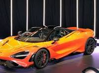
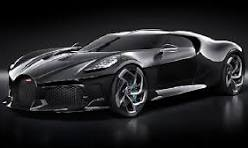
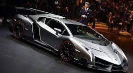
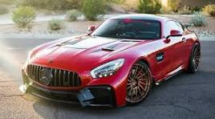

ABOUT ME
NAMA
NIM
KELAS
SUPRA

Toyota Supra adalah mobil sport berperforma tinggi yang diproduksi oleh Toyota Motor Corporation, Jepang dari tahun 1978 sampai 2002. Pada mulanya, Supra adalah versi mewah bermesin 6 silinder dari Toyota Celica. Mulai tahun 1986, Supra menjadi mobil sport tersendiri yang tidak ada hubungannya dengan Celica.
GTR R35

Nissan GT-R adalah sebuah mobil sport yang dibuat oleh Nissan, dikeluarkan di Jepang pada tanggal 6 Desember 2007, Amerika Serikat pada tanggal 7 Juli 2008, dan seluruh dunia pada bulan Maret 2009.[1][2][3] Mobil ini merupakan penerus dari jajaran Skyline GT-R.
Mc Laren
McLaren Racing Limited merupakan sebuah tim balap mobil yang berkantor pusat di McLaren Technology Centre di Woking, Surrey, Inggris. Tim McLaren dikenal sebagai tim kontruktor Formula Satu tertua kedua yang masih aktif hingga saat ini dan tim paling sukses kedua setelah tim Ferrari. Tim McLaren telah berhasil memenangi 12 gelar juara dunia pembalap dan 8 gelar juara dunia konstruktor.
Buggati
Kendaraan pertama Ettore Bugatti diproduksi saat ia hendak menginjak usia 21 tahun. Delapan tahun kemudian, pada 1909, ia mendirikan perusahaannya sendiri di Molsheim, Alsace (wilayah perbatasan Prancis dan Jerman). Itu adalah momen yang menyenangkan bagi dunia otomobil dan olahraga motor yang sedang berkembang.
Lamborgini
Pada tahun 1963, Ferruccio Lamborghini memutuskan untuk menciptakan mobil yang akan menantang merek-merek mewah terkemuka seperti Ferrari. Dia mendirikan perusahaan otomotifnya sendiri, "Automobili Lamborghini S.p.A.", di Sant'Agata Bolognese, Italia Utara.
Merci
Adapun mobil pertama yang memakai merek Mercedes-Benz dihasilkan pada tahun 1926 setelah Karl Benz dan Gottlieb Daimler melakukan peleburan (merger) perusahaan keduanya menjadi Daimler-Benz. Asal muasal nama “Mercedes” sendiri merupakan nama dari seorang putri Emil Jellinek yang berasal dari Austria.